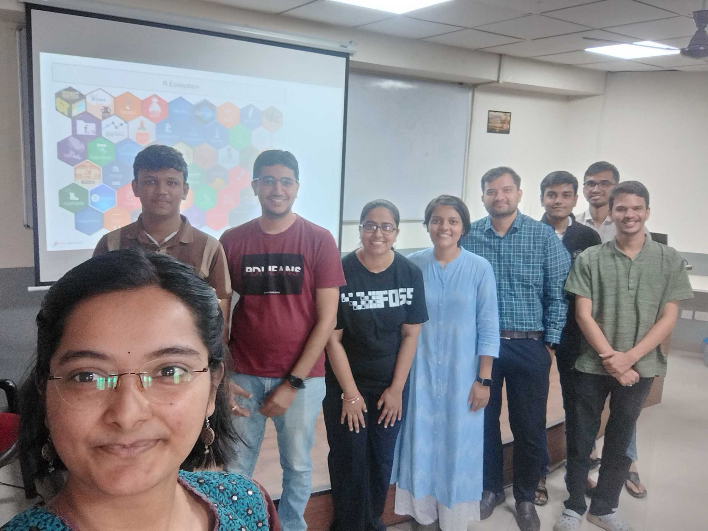

Ronak Shah, co-organizer of the Pune R User Group in India, is energizing a growing R community that connects students, professionals, and data enthusiasts across the city. Through in-person and online meetups, the group fosters collaboration and learning while supporting R’s expanding role in India’s pharmaceutical industry. Ronak also discussed his side project, Package Reviewer, a Shiny app that enables users to rate and review R packages, helping others discover reliable tools within the R ecosystem.

Are you currently hosting your meetups online, in person, or in a hybrid format?
We initially started with in-person meetups at Pune University, where we reserved some rooms to make it easier for students to join our community. This was one of the reasons why more students began participating. During the summer and monsoon seasons, especially when the rains were heavy, we also decided to incorporate online sessions. This not only allowed local enthusiasts to join but also attracted those situated outside Pune, helping us grow our user base. Going forward, we plan to maintain a mix of both virtual and on-site events, ensuring we cater to everyone’s preferences.
What are your plans for the group over the next few months?
When we started this year, the initial plan was to have one meetup every month. However, we have taken a brief break, and we haven’t met in August and September. After six months, we decided to regroup and reorganize to evaluate our approach and determine our satisfaction with it. Currently, we have five co-organizers who are primarily responsible for decision-making regarding the organization of these meetups and the topics we want to cover.
We want to analyze what has gone well and identify areas for improvement and change. We are currently working on this.
Initially, we focused on the basics of R, but now we plan to move on to some advanced topics. We have also hosted a couple of sessions on introduction to Shiny, including a hands-on workshop. We would now like to introduce more advanced-level topics in R, which we plan to cover in the coming months.

What challenges have you faced while organizing the group?
We are facing a couple of challenges. First, it remains challenging to find enthusiasts who are interested in R and bring them together on a single online platform. We are exploring various initiatives to address this, including leveraging LinkedIn and utilizing our mutual connections. However, it remains a challenge to attract these individuals.
Even when we do find people, getting them to attend events can be difficult. We usually schedule these sessions on weekends when they are typically free, but we still encounter obstacles in encouraging their participation.
To encourage attendance, we are considering relocating our events to a more convenient location. For example, we might arrange to hold them in a café setting and provide coffee and snacks. This external motivation could encourage more participants to join us. We’re hopeful that these changes will be effective, and we look forward to seeing the results in upcoming months.
Please share about a project you are currently working on or have worked on in the past using the R language. Goal/reason, result, anything interesting, especially related to the industry you work in?
One challenge I noticed is that, while there are many well-known packages, such as dplyr, data.table, and ggplot2, which are thoroughly tested and come with extensive user feedback, a vast array of other packages—over 20,000 on CRAN alone, with numerous more on GitHub—exist. This raises the question: how can users assess the quality of these lesser-known packages? Are they still being actively maintained? Is there someone available to respond to user reports?
To address this issue, I created a simple Shiny app called Package Reviewer. In this app, users can select any package they have tried and rate it on a scale of 0 to 5 stars. Users can give half-star ratings (e.g., 0.5, 1, 1.5, etc.) and add a brief comment to describe their experience with the package.
The goal of this project is to encourage enough user participation so that when someone is considering trying out a new package, they can visit Package Reviewer to see community reviews. This way, they can summarize feedback and understand how the package has been received, helping them make informed decisions about whether to use that package or seek alternatives. That’s the idea behind Package Reviewer.
Check out Package Reviewer and share your thoughts on the R packages you use! Your reviews can help fellow R users find dependable tools and provide developers with valuable feedback to further improve their packages. (Note: Registration is not required to use Package Reviewer. On the main page, use the pulldown menu to select an R package review. For example, AATTools.)
How do I Build an R User Group?
R Consortium’s R User Group and Small Conference Support Program (RUGS) provides grants to help R groups organize, share information, and support each other worldwide. We have given grants over the past four years, encompassing over 76,000 members in over 90 user groups in 39 countries. We would like to include you! Cash grants and meetup.com accounts are awarded based on the intended use of the funds and the amount of money available to distribute